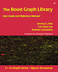
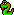

Table of Contents: the Boost Graph Library

Introduction to the BGL
Parallel BGL (distributed-memory parallel graph data structures and algorithms)
History
List of BGL Users
Publications
Acknowledgements
A Quick Tour of the Boost Graph Library.
Review of Elementary Graph Theory
Boost Graph Library Tutorial
Property Maps
The
adjacency_list
class
Examples
File Dependency Example
Six Degrees of Kevin Bacon
Graph Coloring
Sparse Matrix Ordering
Extending the Boost Graph Library
Constructing graph algorithms with BGL
Converting Existing Graphs to BGL
The Boost Graph Interface
Graph
Incidence Graph
Bidirectional Graph
Adjacency Graph
Vertex List Graph
Edge List Graph
Vertex and Edge List Graph
Adjacency Matrix
Mutable Graph
Property Graph
Mutable Property Graph
The Property Map Library
(technically not part of the graph library, but used a lot here)

Python bindings
Visitor Concepts
BFS Visitor
DFS Visitor
Dijkstra Visitor
Bellman Ford Visitor
A* Visitor
Event Visitor
Planar Face Visitor
TSP Tour Visitor
EventVisitorList Adaptors
Event Visitor List
bfs_visitor
dfs_visitor
dijkstra_visitor
bellman_visitor
astar_visitor
Event Visitors
predecessor_recorder
edge_predecessor_recorder
distance_recorder
time_stamper
property_writer
property_put
tsp_tour_visitor
tsp_tour_len_visitor
Graph classes
adjacency_list
directed_graph
undirected_graph
adjacency_matrix
compressed_sparse_row_graph
Graph Adaptors
subgraph
edge_list
reverse_graph
filtered_graph
Vector as Graph
*
Matrix as Graph
*
Leda Graph
*
Stanford GraphBase
Implicit Graphs
Multi-dimensional grid graph
Iterator Adaptors
adjacency_iterator
inv_adjacency_iterator
Traits classes
graph_traits
adjacency_list_traits
property_map
Algorithms
Named parameters (used in many graph algorithms)
Basic Operations
copy_graph
transpose_graph
Core Searches
breadth_first_search
breadth_first_visit
depth_first_search
depth_first_visit
undirected_dfs
Other Core Algorithms
topological_sort
transitive_closure
lengauer_tarjan_dominator_tree
Shortest Paths / Cost Minimization Algorithms
dijkstra_shortest_paths
dijkstra_shortest_paths_no_color_map
bellman_ford_shortest_paths
dag_shortest_paths
johnson_all_pairs_shortest_paths
floyd_warshall_all_pairs_shortest_paths
r_c_shortest_paths
- resource-constrained shortest paths
astar_search
(A* search algorithm)
Minimum Spanning Tree Algorithms
kruskal_minimum_spanning_tree
prim_minimum_spanning_tree
Random Spanning Tree Algorithm
random_spanning_tree
Algorithm for Common Spanning Trees of Two Graphs
two_graphs_common_spanning_trees
Connected Components Algorithms
connected_components
strong_components
biconnected_components
articulation_points
Incremental Connected Components
initialize_incremental_components
incremental_components
same_component
component_index
Maximum Flow and Matching Algorithms
edmonds_karp_max_flow
push_relabel_max_flow
boykov_kolmogorov_max_flow
edmonds_maximum_cardinality_matching
Minimum Cost Maximum Flow Algorithms
cycle_canceling
successive_shortest_path_nonnegative_weights
find_flow_cost
Minimum Cut Algorithms
stoer_wagner_min_cut
Sparse Matrix Ordering Algorithms
cuthill_mckee_ordering
king_ordering
minimum_degree_ordering
sloan_ordering
sloan_start_end_vertices
Graph Metrics
ith_wavefront
,
max_wavefront
,
aver_wavefront
, and
rms_wavefront
bandwidth
ith_bandwidth
brandes_betweenness_centrality
minimum_cycle_ratio
and
maximum_cycle_ratio
Graph Structure Comparisons
isomorphism
vf2_sub_graph_iso
(VF2 subgraph isomorphism algorithm)
mcgregor_common_subgraphs
Layout Algorithms
Topologies used as spaces for graph drawing
random_graph_layout
circle_layout
kamada_kawai_spring_layout
fruchterman_reingold_force_directed_layout
gursoy_atun_layout
Clustering algorithms
betweenness_centrality_clustering
Planar Graph Algorithms
boyer_myrvold_planarity_test
planar_face_traversal
planar_canonical_ordering
chrobak_payne_straight_line_drawing
is_straight_line_drawing
is_kuratowski_subgraph
make_connected
make_biconnected_planar
make_maximal_planar
Miscellaneous Algorithms
metric_tsp_approx
sequential_vertex_coloring
edge_coloring
is_bipartite
(including two-coloring of bipartite graphs)
find_odd_cycle
maximum_adjacency_search
hawick_circuits
(find all circuits of a directed graph)
Graph Input/Output
AT&T Graphviz:
read_graphviz
,
write_graphviz
DIMACS Max-flow:
read_dimacs_max_flow and read_dimacs_min_cut
,
write_dimacs_max_flow
GraphML:
read_graphml
and
write_graphml
Auxiliary Concepts, Classes, and Functions
property
ColorValue
Buffer
BasicMatrix
incident
opposite
Tools for random graphs
random_vertex
random_edge
generate_random_graph
randomize_property
erdos_renyi_iterator
sorted_erdos_renyi_iterator
plod_iterator
small_world_iterator
Challenge and To-Do List
Trouble Shooting
Known Problems
FAQ
BGL Book Errata
*
Items marked have not yet been documented.
Copyright © 2000-2001
Jeremy Siek
, Indiana University (
jsiek@osl.iu.edu
)
Lie-Quan Lee
, Indiana University (
llee@cs.indiana.edu
)
Andrew Lumsdaine
, Indiana University (
lums@osl.iu.edu
)